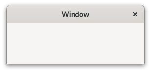

Gtk.Window¶
Example¶
Methods¶
- Inherited
Gtk.Widget (181), GObject.Object (37), Gtk.Accessible (15), Gtk.Buildable (1), Gtk.Native (6), Gtk.Root (3)
- Structs
Virtual Methods¶
- Inherited
Gtk.Widget (25), GObject.Object (7), Gtk.Accessible (6), Gtk.Buildable (9), Gtk.ShortcutManager (2)
|
|
Properties¶
- Inherited
Name |
Type |
Flags |
Short Description |
|---|---|---|---|
r/w/en |
|||
r/w/en |
|||
r/w/en |
|||
r/w/en |
|||
r/w/en |
|||
r/w/en |
|||
r/w/en |
|||
r/w/en |
|||
r/w/en |
|||
r/w/en |
|||
r/w/en |
|||
r/w/c/en |
|||
r/w/en |
|||
r/w/en |
|||
r/w/en |
|||
r |
|||
r/w/c/en |
|||
r/w/en |
|||
r/w/en |
|||
r/w/en |
|||
w |
|||
r/en |
|||
r/w |
|||
r/w/en |
|||
r/w/c/en |
Signals¶
- Inherited
Name |
Short Description |
|---|---|
Emitted when the user activates the default widget of window. |
|
Emitted when the user activates the currently focused widget of window. |
|
Emitted when the user clicks on the close button of the window. |
|
Emitted when the user enables or disables interactive debugging. |
|
emitted when the set of accelerators or mnemonics that are associated with window changes. |
Fields¶
- Inherited
Name |
Type |
Access |
Description |
|---|---|---|---|
parent_instance |
r |
Class Details¶
- class Gtk.Window(*args, **kwargs)¶
- Bases
- Abstract
No
- Structure
A
GtkWindowis a toplevel window which can contain other widgets.An example
Gtk.WindowWindows normally have decorations that are under the control of the windowing system and allow the user to manipulate the window (resize it, move it, close it,…).
The
GtkWindowimplementation of the [iface`Gtk`.Buildable] interface supports setting a child as the titlebar by specifying “titlebar” as the “type” attribute of a<child>element.- CSS nodes
`` window.background [.csd / .solid-csd / .ssd] [.maximized / .fullscreen / .tiled] ├── <child> ╰── <titlebar child>.titlebar [.default-decoration] ``
GtkWindowhas a main CSS node with name window and style class .background.Style classes that are typically used with the main CSS node are .csd (when client-side decorations are in use), .solid-csd (for client-side decorations without invisible borders), .ssd (used by mutter when rendering server-side decorations).
Gtk.Windowalso represents window states with the following style classes on the main node: .maximized, .fullscreen, .tiled (when supported, also .tiled-top, .tiled-left, .tiled-right, .tiled-bottom).GtkWindowsubclasses often add their own discriminating style classes, such as .dialog, .popup or .tooltip.Generally, some CSS properties don’t make sense on the toplevel window node, such as margins or padding. When client-side decorations without invisible borders are in use (i.e. the .solid-csd style class is added to the main window node), the CSS border of the toplevel window is used for resize drags. In the .csd case, the shadow area outside of the window can be used to resize it.
GtkWindowadds the .titlebar and .default-decoration style classes to the widget that is added as a titlebar child.- Accessibility
Until GTK 4.10,
GtkWindowused theGTK_ACCESSIBLE_ROLE_WINDOWrole.Since GTK 4.12,
GtkWindowuses theGTK_ACCESSIBLE_ROLE_APPLICATIONrole.- Actions
GtkWindowdefines a set of built-in actions:default.activate: Activate the default widget.window.minimize: Minimize the window.window.toggle-maximized: Maximize or restore the window.window.close: Close the window.
- classmethod get_default_icon_name()[source]¶
-
Returns the fallback icon name for windows.
The returned string is owned by GTK and should not be modified. It is only valid until the next call to [func`Gtk`.Window.set_default_icon_name].
- classmethod get_toplevels()[source]¶
- Returns
the list of toplevel widgets
- Return type
Returns a list of all existing toplevel windows.
If you want to iterate through the list and perform actions involving callbacks that might destroy the widgets or add new ones, be aware that the list of toplevels will change and emit the “items-changed” signal.
- classmethod list_toplevels()[source]¶
- Returns
list of toplevel widgets
- Return type
Returns a list of all existing toplevel windows.
The widgets in the list are not individually referenced. If you want to iterate through the list and perform actions involving callbacks that might destroy the widgets, you must call
g_list_foreach (result, (GFunc)g_object_ref, NULL)first, and then unref all the widgets afterwards.
- classmethod new()[source]¶
- Returns
a new
GtkWindow.- Return type
Creates a new
GtkWindow.To get an undecorated window (no window borders), use [method`Gtk`.Window.set_decorated].
All top-level windows created by
Gtk.Window.new() are stored in an internal top-level window list. This list can be obtained from [func`Gtk`.Window.list_toplevels]. Due to GTK keeping a reference to the window internally,Gtk.Window.new() does not return a reference to the caller.To delete a
GtkWindow, call [method`Gtk`.Window.destroy].
- classmethod set_auto_startup_notification(setting)[source]¶
-
Sets whether the window should request startup notification.
By default, after showing the first
GtkWindow, GTK calls [method`Gdk`.Toplevel.set_startup_id]. Call this function to disable the automatic startup notification. You might do this if your first window is a splash screen, and you want to delay notification until after your real main window has been shown, for example.In that example, you would disable startup notification temporarily, show your splash screen, then re-enable it so that showing the main window would automatically result in notification.
- classmethod set_default_icon_name(name)[source]¶
- Parameters
name (
str) – the name of the themed icon
Sets an icon to be used as fallback.
The fallback icon is used for windows that haven’t had [method`Gtk`.Window.set_icon_name] called on them.
- classmethod set_interactive_debugging(enable)[source]¶
-
Opens or closes the interactive debugger.
The debugger offers access to the widget hierarchy of the application and to useful debugging tools.
- close()[source]¶
Requests that the window is closed.
This is similar to what happens when a window manager close button is clicked.
This function can be used with close buttons in custom titlebars.
- fullscreen()[source]¶
Asks to place self in the fullscreen state.
Note that you shouldn’t assume the window is definitely fullscreen afterward, because other entities (e.g. the user or window manager) unfullscreen it again, and not all window managers honor requests to fullscreen windows.
You can track the result of this operation via the [property`Gdk`.Toplevel:state] property, or by listening to notifications of the [property`Gtk`.Window:fullscreened] property.
- fullscreen_on_monitor(monitor)[source]¶
- Parameters
monitor (
Gdk.Monitor) – which monitor to go fullscreen on
Asks to place self in the fullscreen state on the given monitor.
Note that you shouldn’t assume the window is definitely fullscreen afterward, or that the windowing system allows fullscreen windows on any given monitor.
You can track the result of this operation via the [property`Gdk`.Toplevel:state] property, or by listening to notifications of the [property`Gtk`.Window:fullscreened] property.
- get_application()[source]¶
- Returns
a
GtkApplication- Return type
Gets the
GtkApplicationassociated with the window.
- get_child()[source]¶
- Returns
the child widget of self
- Return type
Gtk.WidgetorNone
Gets the child widget of self.
- get_default_size()[source]¶
- Returns
- width
location to store the default width
- height
location to store the default height
- Return type
Gets the default size of the window.
A value of 0 for the width or height indicates that a default size has not been explicitly set for that dimension, so the “natural” size of the window will be used.
This function is the recommended way for saving window state across restarts of applications.
- get_default_widget()[source]¶
- Returns
the default widget
- Return type
Gtk.WidgetorNone
Returns the default widget for self.
- get_destroy_with_parent()[source]¶
-
Returns whether the window will be destroyed with its transient parent.
- get_focus()[source]¶
- Returns
the currently focused widget
- Return type
Gtk.WidgetorNone
Retrieves the current focused widget within the window.
Note that this is the widget that would have the focus if the toplevel window focused; if the toplevel window is not focused then
gtk_widget_has_focus (widget)will not beTruefor the widget.
- get_group()[source]¶
- Returns
the
GtkWindowGroupfor a window or the default group- Return type
Returns the group for self.
If the window has no group, then the default group is returned.
-
Returns whether this window reacts to F10 key presses by activating a menubar it contains.
New in version 4.2.
- get_hide_on_close()[source]¶
-
Returns whether the window will be hidden when the close button is clicked.
- get_resizable()[source]¶
-
Gets the value set by
Gtk.Window.set_resizable().
- get_titlebar()[source]¶
- Returns
the custom titlebar
- Return type
Gtk.WidgetorNone
Returns the custom titlebar that has been set with
Gtk.Window.set_titlebar().
- get_transient_for()[source]¶
- Returns
the transient parent for this window
- Return type
Gtk.WindoworNone
Fetches the transient parent for this window.
- is_active()[source]¶
-
Returns whether the window is part of the current active toplevel.
The active toplevel is the window receiving keystrokes.
The return value is
Trueif the window is active toplevel itself. You might use this function if you wanted to draw a widget differently in an active window from a widget in an inactive window.
- is_fullscreen()[source]¶
- Returns
whether the window has a fullscreen state.
- Return type
Retrieves the current fullscreen state of self.
Note that since fullscreening is ultimately handled by the window manager and happens asynchronously to an application request, you shouldn’t assume the return value of this function changing immediately (or at all), as an effect of calling [method`Gtk`.Window.fullscreen] or [method`Gtk`.Window.unfullscreen].
If the window isn’t yet mapped, the value returned will whether the initial requested state is fullscreen.
- is_maximized()[source]¶
- Returns
whether the window has a maximized state.
- Return type
Retrieves the current maximized state of self.
Note that since maximization is ultimately handled by the window manager and happens asynchronously to an application request, you shouldn’t assume the return value of this function changing immediately (or at all), as an effect of calling [method`Gtk`.Window.maximize] or [method`Gtk`.Window.unmaximize].
If the window isn’t yet mapped, the value returned will whether the initial requested state is maximized.
- is_suspended()[source]¶
- Returns
whether the window is suspended.
- Return type
Retrieves the current suspended state of self.
A window being suspended means it’s currently not visible to the user, for example by being on a inactive workspace, minimized, obstructed.
New in version 4.12.
- maximize()[source]¶
Asks to maximize self, so that it fills the screen.
Note that you shouldn’t assume the window is definitely maximized afterward, because other entities (e.g. the user or window manager) could unmaximize it again, and not all window managers support maximization.
It’s permitted to call this function before showing a window, in which case the window will be maximized when it appears onscreen initially.
You can track the result of this operation via the [property`Gdk`.Toplevel:state] property, or by listening to notifications on the [property`Gtk`.Window:maximized] property.
- minimize()[source]¶
Asks to minimize the specified self.
Note that you shouldn’t assume the window is definitely minimized afterward, because the windowing system might not support this functionality; other entities (e.g. the user or the window manager) could unminimize it again, or there may not be a window manager in which case minimization isn’t possible, etc.
It’s permitted to call this function before showing a window, in which case the window will be minimized before it ever appears onscreen.
You can track result of this operation via the [property`Gdk`.Toplevel:state] property.
- present()[source]¶
Presents a window to the user.
This may mean raising the window in the stacking order, unminimizing it, moving it to the current desktop and/or giving it the keyboard focus (possibly dependent on the user’s platform, window manager and preferences).
If self is hidden, this function also makes it visible.
- present_with_time(timestamp)[source]¶
- Parameters
timestamp (
int) – the timestamp of the user interaction (typically a button or key press event) which triggered this call
Presents a window to the user in response to an user interaction.
See [method`Gtk`.Window.present] for more details.
The timestamp should be gathered when the window was requested to be shown (when clicking a link for example), rather than once the window is ready to be shown.
- set_application(application)[source]¶
- Parameters
application (
Gtk.ApplicationorNone) – aGtkApplication, orNoneto unset
Sets or unsets the
GtkApplicationassociated with the window.The application will be kept alive for at least as long as it has any windows associated with it (see
Gio.Application.hold() for a way to keep it alive without windows).Normally, the connection between the application and the window will remain until the window is destroyed, but you can explicitly remove it by setting the application to
None.This is equivalent to calling [method`Gtk`.Application.remove_window] and/or [method`Gtk`.Application.add_window] on the old/new applications as relevant.
- set_child(child)[source]¶
- Parameters
child (
Gtk.WidgetorNone) – the child widget
Sets the child widget of self.
- set_decorated(setting)[source]¶
-
Sets whether the window should be decorated.
By default, windows are decorated with a title bar, resize controls, etc. Some window managers allow GTK to disable these decorations, creating a borderless window. If you set the decorated property to
Falseusing this function, GTK will do its best to convince the window manager not to decorate the window. Depending on the system, this function may not have any effect when called on a window that is already visible, so you should call it before calling [method`Gtk`.Widget.show].On Windows, this function always works, since there’s no window manager policy involved.
- set_default_size(width, height)[source]¶
- Parameters
Sets the default size of a window.
The default size of a window is the size that will be used if no other constraints apply.
The default size will be updated whenever the window is resized to reflect the new size, unless the window is forced to a size, like when it is maximized or fullscreened.
If the window’s minimum size request is larger than the default, the default will be ignored.
Setting the default size to a value <= 0 will cause it to be ignored and the natural size request will be used instead. It is possible to do this while the window is showing to “reset” it to its initial size.
Unlike [method`Gtk`.Widget.set_size_request], which sets a size request for a widget and thus would keep users from shrinking the window, this function only sets the initial size, just as if the user had resized the window themselves. Users can still shrink the window again as they normally would. Setting a default size of -1 means to use the “natural” default size (the size request of the window).
If you use this function to reestablish a previously saved window size, note that the appropriate size to save is the one returned by [method`Gtk`.Window.get_default_size]. Using the window allocation directly will not work in all circumstances and can lead to growing or shrinking windows.
- set_default_widget(default_widget)[source]¶
- Parameters
default_widget (
Gtk.WidgetorNone) – widget to be the default to unset the default widget for the toplevel
Sets the default widget.
The default widget is the widget that is activated when the user presses Enter in a dialog (for example).
- set_deletable(setting)[source]¶
-
Sets whether the window should be deletable.
By default, windows have a close button in the window frame. Some window managers allow GTK to disable this button. If you set the deletable property to
Falseusing this function, GTK will do its best to convince the window manager not to show a close button. Depending on the system, this function may not have any effect when called on a window that is already visible, so you should call it before calling [method`Gtk`.Widget.show].On Windows, this function always works, since there’s no window manager policy involved.
- set_destroy_with_parent(setting)[source]¶
- Parameters
setting (
bool) – whether to destroy self with its transient parent
If setting is
True, then destroying the transient parent of self will also destroy self itself.This is useful for dialogs that shouldn’t persist beyond the lifetime of the main window they are associated with, for example.
- set_display(display)[source]¶
- Parameters
display (
Gdk.Display) – aGdkDisplay
Sets the
GdkDisplaywhere the self is displayed.If the window is already mapped, it will be unmapped, and then remapped on the new display.
- set_focus(focus)[source]¶
- Parameters
focus (
Gtk.WidgetorNone) – widget to be the new focus widget, orNoneto unset any focus widget for the toplevel window.
Sets the focus widget.
If focus is not the current focus widget, and is focusable, sets it as the focus widget for the window. If focus is
None, unsets the focus widget for this window. To set the focus to a particular widget in the toplevel, it is usually more convenient to use [method`Gtk`.Widget.grab_focus] instead of this function.
- set_focus_visible(setting)[source]¶
- Parameters
setting (
bool) – the new value
Sets whether “focus rectangles” are supposed to be visible.
This property is maintained by GTK based on user input, and should not be set by applications.
-
Sets whether this window should react to F10 key presses by activating a menubar it contains.
New in version 4.2.
- set_hide_on_close(setting)[source]¶
- Parameters
setting (
bool) – whether to hide the window when it is closed
If setting is
True, then clicking the close button on the window will not destroy it, but only hide it.
- set_icon_name(name)[source]¶
-
Sets the icon for the window from a named themed icon.
See the docs for [class`Gtk`.IconTheme] for more details. On some platforms, the window icon is not used at all.
Note that this has nothing to do with the WM_ICON_NAME property which is mentioned in the ICCCM.
- set_mnemonics_visible(setting)[source]¶
- Parameters
setting (
bool) – the new value
Sets whether mnemonics are supposed to be visible.
This property is maintained by GTK based on user input, and should not be set by applications.
- set_modal(modal)[source]¶
- Parameters
modal (
bool) – whether the window is modal
Sets a window modal or non-modal.
Modal windows prevent interaction with other windows in the same application. To keep modal dialogs on top of main application windows, use [method`Gtk`.Window.set_transient_for] to make the dialog transient for the parent; most window managers will then disallow lowering the dialog below the parent.
- set_resizable(resizable)[source]¶
-
Sets whether the user can resize a window.
Windows are user resizable by default.
- set_startup_id(startup_id)[source]¶
- Parameters
startup_id (
str) – a string with startup-notification identifier
Sets the startup notification ID.
Startup notification identifiers are used by desktop environment to track application startup, to provide user feedback and other features. This function changes the corresponding property on the underlying
GdkSurface.Normally, startup identifier is managed automatically and you should only use this function in special cases like transferring focus from other processes. You should use this function before calling [method`Gtk`.Window.present] or any equivalent function generating a window map event.
This function is only useful on X11, not with other GTK targets.
- set_title(title)[source]¶
-
Sets the title of the
GtkWindow.The title of a window will be displayed in its title bar; on the X Window System, the title bar is rendered by the window manager so exactly how the title appears to users may vary according to a user’s exact configuration. The title should help a user distinguish this window from other windows they may have open. A good title might include the application name and current document filename, for example.
Passing
Nonedoes the same as setting the title to an empty string.
- set_titlebar(titlebar)[source]¶
- Parameters
titlebar (
Gtk.WidgetorNone) – the widget to use as titlebar
Sets a custom titlebar for self.
A typical widget used here is [class`Gtk`.HeaderBar], as it provides various features expected of a titlebar while allowing the addition of child widgets to it.
If you set a custom titlebar, GTK will do its best to convince the window manager not to put its own titlebar on the window. Depending on the system, this function may not work for a window that is already visible, so you set the titlebar before calling [method`Gtk`.Widget.show].
- set_transient_for(parent)[source]¶
- Parameters
parent (
Gtk.WindoworNone) – parent window
Dialog windows should be set transient for the main application window they were spawned from. This allows window managers to e.g. keep the dialog on top of the main window, or center the dialog over the main window. [ctor`Gtk`.Dialog.new_with_buttons] and other convenience functions in GTK will sometimes call
Gtk.Window.set_transient_for() on your behalf.Passing
Nonefor parent unsets the current transient window.On Windows, this function puts the child window on top of the parent, much as the window manager would have done on X.
- unfullscreen()[source]¶
Asks to remove the fullscreen state for self, and return to its previous state.
Note that you shouldn’t assume the window is definitely not fullscreen afterward, because other entities (e.g. the user or window manager) could fullscreen it again, and not all window managers honor requests to unfullscreen windows; normally the window will end up restored to its normal state. Just don’t write code that crashes if not.
You can track the result of this operation via the [property`Gdk`.Toplevel:state] property, or by listening to notifications of the [property`Gtk`.Window:fullscreened] property.
- unmaximize()[source]¶
Asks to unmaximize self.
Note that you shouldn’t assume the window is definitely unmaximized afterward, because other entities (e.g. the user or window manager) maximize it again, and not all window managers honor requests to unmaximize.
You can track the result of this operation via the [property`Gdk`.Toplevel:state] property, or by listening to notifications on the [property`Gtk`.Window:maximized] property.
- unminimize()[source]¶
Asks to unminimize the specified self.
Note that you shouldn’t assume the window is definitely unminimized afterward, because the windowing system might not support this functionality; other entities (e.g. the user or the window manager) could minimize it again, or there may not be a window manager in which case minimization isn’t possible, etc.
You can track result of this operation via the [property`Gdk`.Toplevel:state] property.
- do_activate_default() virtual¶
- do_activate_focus() virtual¶
- do_keys_changed() virtual¶
Signal Details¶
- Gtk.Window.signals.activate_default(window)¶
- Signal Name
activate-default- Flags
- Parameters
window (
Gtk.Window) – The object which received the signal
Emitted when the user activates the default widget of window.
This is a keybinding signal.
- Gtk.Window.signals.activate_focus(window)¶
- Signal Name
activate-focus- Flags
- Parameters
window (
Gtk.Window) – The object which received the signal
Emitted when the user activates the currently focused widget of window.
This is a keybinding signal.
- Gtk.Window.signals.close_request(window)¶
- Signal Name
close-request- Flags
- Parameters
window (
Gtk.Window) – The object which received the signal- Returns
Trueto stop other handlers from being invoked for the signal- Return type
Emitted when the user clicks on the close button of the window.
- Gtk.Window.signals.enable_debugging(window, toggle)¶
- Signal Name
enable-debugging- Flags
- Parameters
window (
Gtk.Window) – The object which received the signaltoggle (
bool) – toggle the debugger
- Returns
Trueif the key binding was handled- Return type
Emitted when the user enables or disables interactive debugging.
When toggle is
True, interactive debugging is toggled on or off, when it isFalse, the debugger will be pointed at the widget under the pointer.This is a keybinding signal.
The default bindings for this signal are Ctrl-Shift-I and Ctrl-Shift-D.
- Gtk.Window.signals.keys_changed(window)¶
- Signal Name
keys-changed- Flags
- Parameters
window (
Gtk.Window) – The object which received the signal
emitted when the set of accelerators or mnemonics that are associated with window changes.
Deprecated since version 4.10: Use [class`Gtk`.Shortcut] and [class`Gtk`.EventController] to implement keyboard shortcuts
Property Details¶
- Gtk.Window.props.application¶
- Name
application- Type
- Default Value
- Flags
The
GtkApplicationassociated with the window.The application will be kept alive for at least as long as it has any windows associated with it (see
Gio.Application.hold() for a way to keep it alive without windows).Normally, the connection between the application and the window will remain until the window is destroyed, but you can explicitly remove it by setting the
:applicationproperty toNone.
- Gtk.Window.props.child¶
- Name
child- Type
- Default Value
- Flags
The child widget.
- Gtk.Window.props.decorated¶
- Name
decorated- Type
- Default Value
- Flags
Whether the window should have a frame (also known as *decorations*).
- Gtk.Window.props.default_height¶
- Name
default-height- Type
- Default Value
0- Flags
The default height of the window.
- Gtk.Window.props.default_widget¶
- Name
default-widget- Type
- Default Value
- Flags
The default widget.
- Gtk.Window.props.default_width¶
- Name
default-width- Type
- Default Value
0- Flags
The default width of the window.
- Gtk.Window.props.deletable¶
- Name
deletable- Type
- Default Value
- Flags
Whether the window frame should have a close button.
- Gtk.Window.props.destroy_with_parent¶
- Name
destroy-with-parent- Type
- Default Value
- Flags
If this window should be destroyed when the parent is destroyed.
- Gtk.Window.props.display¶
- Name
display- Type
- Default Value
- Flags
The display that will display this window.
- Gtk.Window.props.focus_visible¶
- Name
focus-visible- Type
- Default Value
- Flags
Whether ‘focus rectangles’ are currently visible in this window.
This property is maintained by GTK based on user input and should not be set by applications.
- Gtk.Window.props.focus_widget¶
- Name
focus-widget- Type
- Default Value
- Flags
The focus widget.
- Gtk.Window.props.fullscreened¶
- Name
fullscreened- Type
- Default Value
- Flags
Whether the window is fullscreen.
Setting this property is the equivalent of calling [method`Gtk`.Window.fullscreen] or [method`Gtk`.Window.unfullscreen]; either operation is asynchronous, which means you will need to connect to the
::notifysignal in order to know whether the operation was successful.
- Name
handle-menubar-accel- Type
- Default Value
- Flags
Whether the window frame should handle F10 for activating menubars.
New in version 4.2.
- Gtk.Window.props.hide_on_close¶
- Name
hide-on-close- Type
- Default Value
- Flags
If this window should be hidden when the users clicks the close button.
- Gtk.Window.props.icon_name¶
- Name
icon-name- Type
- Default Value
- Flags
Specifies the name of the themed icon to use as the window icon.
See [class`Gtk`.IconTheme] for more details.
- Gtk.Window.props.is_active¶
-
Whether the toplevel is the currently active window.
- Gtk.Window.props.maximized¶
-
Whether the window is maximized.
Setting this property is the equivalent of calling [method`Gtk`.Window.maximize] or [method`Gtk`.Window.unmaximize]; either operation is asynchronous, which means you will need to connect to the
::notifysignal in order to know whether the operation was successful.
- Gtk.Window.props.mnemonics_visible¶
- Name
mnemonics-visible- Type
- Default Value
- Flags
Whether mnemonics are currently visible in this window.
This property is maintained by GTK based on user input, and should not be set by applications.
- Gtk.Window.props.resizable¶
- Name
resizable- Type
- Default Value
- Flags
If
True, users can resize the window.
- Gtk.Window.props.startup_id¶
-
A write-only property for setting window’s startup notification identifier.
- Gtk.Window.props.suspended¶
- Name
suspended- Type
- Default Value
- Flags
Whether the window is suspended.
See [method`Gtk`.Window.is_suspended] for details about what suspended means.
New in version 4.12.
- Gtk.Window.props.title¶
-
The title of the window.
- Gtk.Window.props.titlebar¶
- Name
titlebar- Type
- Default Value
- Flags
The titlebar widget.
New in version 4.6.
- Gtk.Window.props.transient_for¶
- Name
transient-for- Type
- Default Value
- Flags
The transient parent of the window.